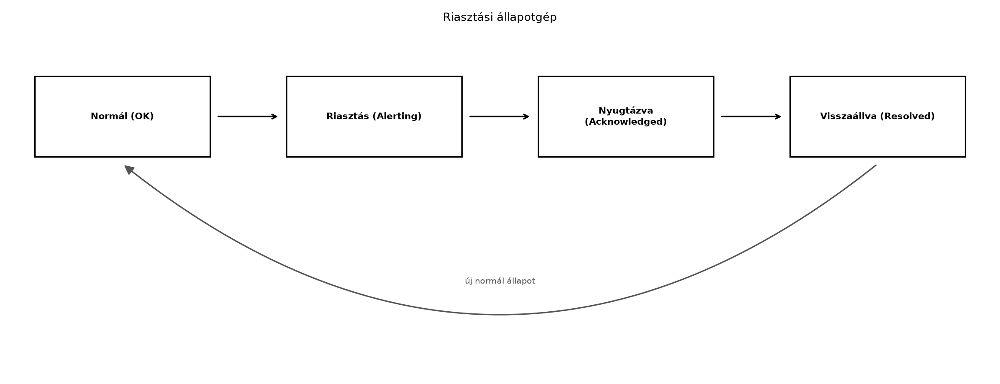

A TerraSense üvegházban a növények állapota akkor is romolhat, ha senki sem nézi a Grafanát. A hőmérséklet túllépheti a kritikus értéket, a talajnedvesség túl alacsony lehet, vagy ami még rosszabb: a szenzorcsomópont egyszerűen leáll, és nem érkezik több adat. Az operátorok nem figyelhetik folyamatosan a dashboardot, ezért a rendszernek magának kell észlelnie a rendellenességeket, és értesítenie kell a megfelelő személyt. A rosszul beállított riasztások azonban hamis pozitívokkal áraszthatják el az üzemeltetőt, ami riasztási fáradtsághoz vezet, és a valódi krízisek elvesznek a zajban. Ebben az alfejezetben olyan riasztási szabályokat tervezünk, amelyek megbízhatóan jelzik a problémákat anélkül, hogy felesleges zajt generálnának.
Definíció. A riasztási szabály (alert rule) egy kiértékelhető feltétel, egy időtartam és egy súlyossági szint együttese. A feltétel lehet küszöbátlépés, változási sebesség vagy hiányzó adat; az időtartam határozza meg, hogy a feltételnek mennyi ideig kell folyamatosan fennállnia a riasztás kiváltásához; a súlyosság pedig az értesítési csatornát és az eszkalációt befolyásolja.
A TerraSense-ben három alapvető riasztási osztályt különböztetünk meg:
state topicban megjelenő local_alert
mezővel. Ez lehet szenzorhiba, alacsony akkumulátorszint, vagy a
beágyazott szoftver watchdog újraindulása.A folyamat- és adathiány-riasztásokat a backend (Grafana) és az edge
is kiértékelheti. Az edge-riasztás alacsony késleltetést biztosít akkor
is, ha a felhőkapcsolat megszakad, de az állapotot akkor is továbbítani
kell a backend felé, amikor a kapcsolat helyreáll. A TerraSense-ben az
edge aggregátor már előállít egy local_alert mezőt a
terrasense/<site>/<node>/state retained
topicra; ezt a backend felhasználhatja, de a végső döntést és az
értesítést a központi riasztási motor hozza meg, hogy az értesítési
csatornák egységesek legyenek.
A riasztási szabályoknak két fontos mechanizmust kell tartalmazniuk:
A riasztás életciklusát a következő állapotgép írja le:

Az ábra azt mutatja, hogy a riasztás akkor vált ki, ha a feltétel az időtartam alatt fennáll. Az operátor nyugtázhatja a riasztást, ami nem szünteti meg a mögöttes állapotot, csak jelzi, hogy tudomásul vették. Amikor a feltétel megszűnik, a riasztás visszaáll, és a szabály újra normál állapotba kerül.
A küszöb-riasztás hiszterézises kiértékelését a következő C++-szerű pszeudokód mutatja:
bool evaluate_threshold(double current, double high, double low, bool &alerting) {
if (!alerting && current > high) return true; // bekapcsolás
if (alerting && current < low) return false; // kikapcsolás
return alerting; // nincs változás
}A high és low közötti sáv a holtsáv
(deadband), amelyben az állapot nem változik.
Az alábbi táblázat összefoglalja, hogy a riasztási szabályt az edge-en vagy a backendben érdemes-e kiértékelni.
| Szempont | Edge riasztás | Backend riasztás |
|---|---|---|
| Késleltetés | Alacsony, helyben dönt | Hálózati körülményektől függ |
| Offline működés | Működik, ha a felhő elérhetetlen | Nem működik |
| Globális állapot, korreláció | Korlátozott | Teljes, több eszköz adataiból |
| Konfiguráció frissítése | Lassabb, eszközre kell juttatni | Azonnal, központilag |
| Erőforrásigény az eszközön | Alacsony, de nem nulla | Nincs |
| Értesítés, eszkaláció | Helyi (pl. hangjelzés) | E-mail, webhook, SMS, push |
A TerraSense-ben mindkét szintet használjuk: az edge az azonnali,
biztonságkritikus döntéseket hozza meg (pl. öntözőszelep leállítása túl
alacsony talajnedvesség esetén), a backend pedig az összes eszközre
kiterjedő, értesítéssel járó riasztásokat kezeli. A
local_alert állapotot a backend is figyeli, így az edge
eseményei bekerülnek a központi riasztási folyamatba.
Az értesítési csatornák kiválasztásánál vegyük figyelembe a súlyosságot és az üzemeltetési modellt:
Az eszkaláció azt jelenti, hogy ha a riasztást nem nyugtázzák egy adott időn belül, akkor magasabb szintű értesítés indul. Például: először e-mail, 15 perc után webhook a csatornába, 30 perc után SMS a vezetőnek. Ezzel elkerülhető, hogy egyetlen elérhetetlen személy miatt a probléma észrevétlen maradjon.
Tegyük fel, hogy a TerraSense gh1 üvegházában a
hőmérsékletre vonatkozó szabály a következő:
A következő idősor érkezik percenként (illusztratív adatok):
| Idő (perc) | Hőmérséklet (°C) | Állapot | Megjegyzés |
|---|---|---|---|
| 0 | 33,0 | Normál | |
| 1 | 34,5 | Normál | |
| 2 | 36,0 | Figyelés | Feltétel igaz, időtartam indul |
| 3 | 35,8 | Figyelés | |
| 4 | 35,5 | Figyelés | |
| 5 | 35,6 | Figyelés | |
| 6 | 35,2 | Riasztás | 5 perc eltelt, folyamatosan > 35 °C |
| 7 | 36,0 | Riasztás | |
| 8 | 34,8 | Riasztás | Még 34 °C felett, nincs visszaállás |
| 9 | 33,9 | Visszaállás | 34 °C alá esett |
A 6. percben a riasztás kivált, mert a feltétel a 2–6. percekben öt percen át fennállt. A 9. percben a hőmérséklet 33,9 °C, ami a 34 °C-os kikapcsolási küszöb alatt van, ezért a riasztás megszűnik. Ha a hiszterézis nem lenne, és a küszöb 35 °C lenne mindkét irányban, akkor a 8. és 9. perc közötti ingadozás esetleg többször is ki-be kapcsolná a riasztást.
Ugyanezt a logikát alkalmazhatjuk az adathiány-riasztásra: ha nem
érkezik telemetria a terrasense/gh1/n001/telemetry topicról
10 percen belül, akkor riasztás. Ezt a Grafanában egy olyan
lekérdezéssel valósítjuk meg, amely az utolsó 10 percben megszámolja az
adatpontokat; ha a szám 0, a riasztás kivált.
Ebben a laborban a Grafana alerting rendszerét úgy konfiguráljuk,
hogy riasztást küldjön, ha a ts-node eszköz nem küld
telemetriát 10 percen belül. Feltételezzük, hogy a
~/iot-labor/stack/compose.yaml már tartalmazza a Grafanát,
a PostgreSQL + TimescaleDB-t, és az adatbázisban a
telemetry tábla a korábbi laborok szerint van feltöltve. Az
értesítéshez egy webhook contact pointot használunk, amelyet egy
egyszerű HTTP végpont fogad.
Munkakönyvtár: ~/iot-labor/i052
mkdir -p ~/iot-labor/i052 && cd ~/iot-labor/i052Előfeltétel: fut a stack
(docker compose -f ~/iot-labor/stack/compose.yaml up -d),
és a Grafana elérhető a http://localhost:3000 címen.
Lépések:
Hozzuk létre a Grafana alerting provisioning könyvtárát, ha még nem létezik:
mkdir -p ~/iot-labor/stack/grafana/provisioning/alertingKészítsünk egy webhook contact point-ot. Ehhez a Grafana alerting
provisioning YAML formátumát használjuk (a pontos szintaxis verziófüggő,
ellenőrizze a telepített Grafana verzióját). Hozzuk létre a
~/iot-labor/stack/grafana/provisioning/alerting/contactpoints.yaml
fájlt:
apiVersion: 1
contactPoints:
- orgId: 1
name: lab-webhook
receivers:
- uid: lab-webhook-1
type: webhook
settings:
url: http://host.docker.internal:8080/alert
httpMethod: POSTA webhook egy egyszerű HTTP szerverre mutat, amelyet a labor során elindítunk.
Hozzuk létre a riasztási szabályt a
~/iot-labor/stack/grafana/provisioning/alerting/terrasense.yaml
fájlban:
apiVersion: 1
groups:
- orgId: 1
name: terrasense
folder: TerraSense
interval: 1m
rules:
- uid: ts-no-data
title: "Nincs telemetria adat 10 perce"
condition: B
data:
- refId: A
datasourceUid: ${TS_DATASOURCE_UID}
model:
expr: |
SELECT count(*)
FROM telemetry
WHERE time > now() - interval '10 minutes'
AND node_id = 'n001'
format: table
- refId: B
datasourceUid: "-100"
model:
expr: A
type: reduce
conditions:
- evaluator:
type: lte
params: [0]
operator:
type: and
reducer:
type: last
type: query
noDataState: Alerting
execErrState: Error
for: 0m
labels:
severity: critical
annotations:
summary: "A n001 eszköz nem küldött adatot 10 perce"A szabály minden percben lekérdezi az utolsó 10 perc
telemetria-rekordjainak számát; ha a szám 0, akkor riasztást vált ki. A
noDataState: Alerting biztosítja, hogy ha a lekérdezés maga
nem ad vissza adatot, akkor is riasztás indul.
Illesszük be a provisioning könyvtárat a Grafana szolgáltatásba a
~/iot-labor/stack/compose.yaml releváns részében (ha még
nincs benne):
grafana:
image: grafana/grafana-oss:11.0.0
volumes:
- ./grafana/provisioning/alerting:/etc/grafana/provisioning/alerting:ro
# ... egyéb volume-okA pontos compose módosítást a meglévő fájlhoz igazítva végezzük el.
Indítsunk el egy egyszerű webhook szervert a laborhoz. Használjunk Python egy sorost a 8080-as porton:
python3 -c "from http.server import BaseHTTPRequestHandler, HTTPServer; \
class H(BaseHTTPRequestHandler):\
def do_POST(self):\
content_length = int(self.headers.get('Content-Length', 0));\
body = self.rfile.read(content_length);\
print(body.decode());\
self.send_response(200);\
self.end_headers();\
HTTPServer(('0.0.0.0', 8080), H).serve_forever()"(Az olvashatóság kedvéért ezt érdemes egy
webhook_server.py fájlba menteni.)
Indítsuk újra a Grafanát, hogy a provisioning betöltődjön:
docker compose -f ~/iot-labor/stack/compose.yaml restart grafanaSzimuláljuk az adathiányt: állítsuk le a gateway-t vagy a
node-ot, vagy egyszerűen hagyjuk, hogy a ts-node szimuláció
ne küldjön adatot a következő 10 percben. A labor gyorsításához a
szabályban az időablak csökkenthető, de a kiértékelési intervallum
maradjon 1 perc.
Várt kimenet: a Grafana UI Alerting →
Alert rules oldalán a szabály állapota
Normal-ból Pending-be, majd
Alerting-ba vált. A webhook szerver kimenetén megjelenik a
POST kérés JSON payloaddal, amely tartalmazza az alertname,
state, summary mezőket.
Takarítás: távolítsuk el a laborhoz létrehozott
webhook szervert, és állítsuk vissza a compose fájlt az eredeti
állapotába, ha a provisioning mountot csak laborcélra adtuk hozzá. A
~/iot-labor/i052 könyvtár törölhető.
| Tünet | Lehetséges ok | Javítás |
|---|---|---|
| A riasztás nem vált ki, pedig nincs adat | A lekérdezés rossz időablakot vagy rossz node_id-t
használ |
Ellenőrizze a query-t a Grafana Explore-ban, és javítsa a feltételt |
| A riasztás azonnal kivált, pedig van adat | A count(*) 0-t ad, mert a tábla neve vagy a sémája nem
egyezik |
Ellenőrizze a TimescaleDB táblanevet és a time oszlop
típusát |
| A webhook nem kap értesítést | A contact point URL nem elérhető a konténerből | Használjon host.docker.internal-t vagy a konténer
hálózati nevét |
| A riasztás ki-be kapcsol (flapping) | Nincs hiszterézis vagy túl rövid az for időtartam |
Állítson be hiszterézist, növelje az időtartamot |
local_alert állapotot
továbbítani kell a state topicra, és a backendnek figyelnie kell
azt.Definiálja a három riasztási osztályt (folyamat, adathiány, eszközhiba), és adjon egy-egy konkrét TerraSense-példát mindegyikre. Magyarázza el, miért fontos megkülönböztetni őket az értesítési stratégia szempontjából.
Egy fűtési rendszerben a hőmérséklet-riasztás bekapcsolási küszöbe 40 °C, kikapcsolási küszöbe 38 °C, a szükséges időtartam 5 perc. A hőmérséklet percenkénti értékei: 39, 41, 41, 40,5, 39,5, 38,5. Mikor és hányadik percben vált ki a riasztás? Lesz-e visszaállás a megadott idősor alatt? Indokolja a választ a hiszterézis és az időtartam figyelembevételével.
Módosítsa a laborban létrehozott Grafana riasztási szabályt úgy, hogy
15 perces adathiányt figyeljen, és a summary annotációban
jelenjen meg a site és node érték is. Adja meg
a módosított YAML fájl releváns részét.
A Grafana riasztás nem vált ki, pedig a webhook szerver korábban
működött, és a dashboardon látható, hogy nincs adat a
telemetry táblában. Soroljon fel legalább három lehetséges
okot, és mindegyikhez adjon javítási lépést.
gh1 üvegházban, ami a növények károsodásához vezethet. Az
értesítés az agronómusnak szól, mert beavatkozásra van szükség.n001 node nem publikál a
terrasense/gh1/n001/telemetry topicra 10 perce. Ez lehet
akkumulátorlemerülés, rádiós interferencia vagy gateway-probléma. Az
értesítés a rendszergazdának szól.ts-node belső diagnosztikája magas
hőmérsékletet észlel a saját mikrokontrollerén, és ezt a
local_alert mezőben beállítja a state topicban. Az
értesítés a hardver-karbantartónak szól.A megkülönböztetés azért fontos, mert a probléma jellege eltérő szakértelmet és válaszidőt igényel. Az adathiány-riasztás gyakran sürgősebb, mert a rendszer vakon repül, míg a folyamatriasztásnál az operátornak lehetősége van manuálisan ellenőrizni.
A feltétel: hőmérséklet > 40 °C (bekapcsolás), hőmérséklet < 38 °C (kikapcsolás), időtartam 5 perc folyamatosan.
Az idősor:
| Perc | Hőmérséklet | Állapot |
|---|---|---|
| 1 | 39 | Normál (feltétel hamis) |
| 2 | 41 | Figyelés indul (feltétel igaz, t=1) |
| 3 | 41 | Figyelés (t=2) |
| 4 | 40,5 | Figyelés (t=3) |
| 5 | 39,5 | Figyelés (t=4) – feltétel igaz, mert 40 °C alatt? Itt 39,5 < 40, tehát a feltétel megszakad! |
| 6 | 38,5 | Normál (feltétel hamis) |
Az 5. percben a hőmérséklet 39,5 °C, ami a 40 °C-os bekapcsolási küszöb alatt van, tehát a feltétel nem teljesül, és az időtartam számlálója nullázódik. Ezért a riasztás nem vált ki. A kikapcsolási küszöb (38 °C) soha nem lép érvénybe, mert a riasztás be sem kapcsolt. A válasz: nincs riasztás a megadott idősor alatt.
A módosított YAML a for mező növelését és az annotáció
módosítását igényli. A szabály lényegi része:
- uid: ts-no-data-15
title: "Nincs telemetria adat 15 perce"
condition: B
data:
- refId: A
datasourceUid: ${TS_DATASOURCE_UID}
model:
expr: |
SELECT count(*)
FROM telemetry
WHERE time > now() - interval '15 minutes'
AND site = 'gh1'
AND node_id = 'n001'
format: table
- refId: B
datasourceUid: "-100"
model:
expr: A
type: reduce
conditions:
- evaluator:
type: lte
params: [0]
operator:
type: and
reducer:
type: last
type: query
noDataState: Alerting
execErrState: Error
for: 0m
labels:
severity: critical
annotations:
summary: "A {{ $labels.node_id }} eszköz nem küldött adatot 15 perce a(z) {{ $labels.site }} helyen"A site és node_id a lekérdezés eredményéből
címkékként jelennek meg, így az annotáció dinamikusan hivatkozhat
rájuk.
Lehetséges okok:
SELECT count(*) FROM telemetry WHERE time > now() - interval '15 minutes'
lekérdezést; ha hibát ad, javítsa a tábla vagy oszlop nevét.datasourceUid nem egyezik a tényleges
TimescaleDB datasource UID-jével. Ellenőrizze a Grafana
adatforrások listájában az UID-t, és frissítse a YAML fájlban.for értéke nem nulla, ezért
a feltételnek hosszabb ideig kell fennállnia. Ha a teszt során
csak rövid ideig hiányzik az adat, a riasztás nem vált ki. Csökkentse a
for-t vagy várjon tovább.docker logs grafana), és győződjön meg róla, hogy a YAML
fájlok a /etc/grafana/provisioning/alerting alatt
vannak.A riasztási szabályok feltételből, időtartamból és súlyosságból
állnak. A három fő típus – folyamat-, adathiány- és eszközhiba-riasztás
– eltérő válaszreakciót igényel. A hiszterézis és az időtartam
megakadályozza a riasztási lebegést és a hamis pozitívokat. A
TerraSense-ben az edge riasztás a local_alert mezőben
jelenik meg a state topicban, a backend pedig a Grafana
alerting segítségével végzi a központi kiértékelést és értesítést. A
laborban elkészült a
~/iot-labor/stack/grafana/provisioning/alerting/terrasense.yaml
szabály, amely 10 perces adathiány esetén riaszt, és a
~/iot-labor/stack/grafana/provisioning/alerting/contactpoints.yaml
webhook contact point. Továbbvitt eredmény. A riasztási
állapotok (OK, Alerting, Acknowledged, Resolved) és a súlyossági címke
(severity: critical) konvencióját használja a Megfigyelhetőség végponttól végpontig alfejezet a
metrika- és naplókorellációhoz, valamint a Záróprojekt átvételi tesztjei során a riasztási
lánc validálásához.
--100 redukciós datasource
UID viselkedését a telepített verzió dokumentációjával ellenőrizni
kell.host.docker.internal elérhetősége Linux Docker
Desktop és Docker Engine esetén eltérhet; a konténerből való eléréshez a
hálózati beállítást a tényleges környezethez kell igazítani.local_alert mező sémája a Helyi feldolgozás: szűrés, aggregálás,
eseménydetektálás alfejezetben került rögzítésre; a backend általi
feldolgozásának pontos üzenetformátumát az Ingest:
MQTT-ből a backendbe, idempotensen alfejezetben megvalósított
konverter határozza meg.